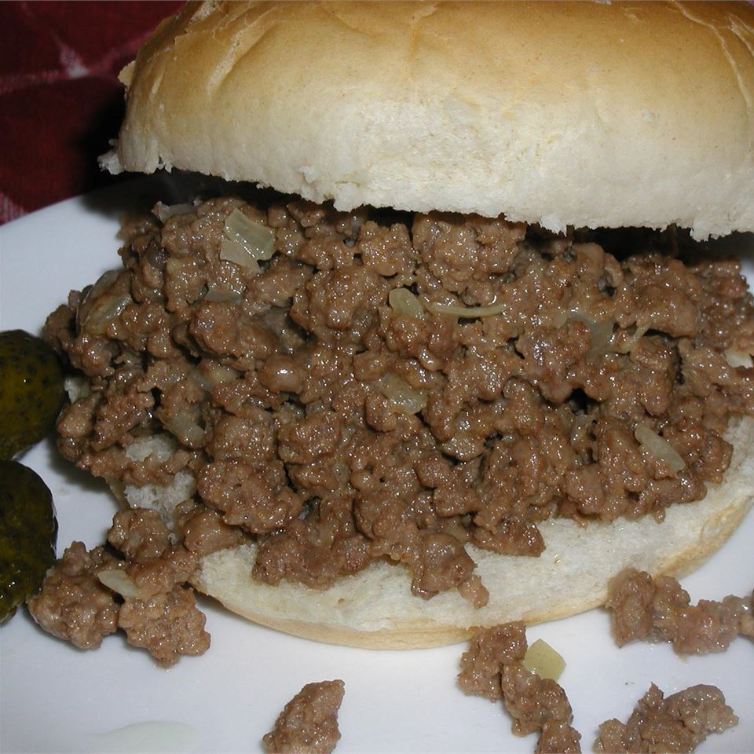

Takeout Burger

A chopped burger seasoned like takeout
This burger is reminiscent of fast food burgers.
Very delicious with a heavy note of pickle but not overpowering
The chopping makes mixing all the ingredients easier but can be made into patties
Ingredients
- 1 lb hamburger
- 1 T oil
- 1 T garlic powder
- 1 T onion powder
- 1/4 medium white onion
- 1 1/2 T Worcestershire sauce
- 1/2 pickle, chopped
- 3 T pickle juice
- 1 T dijon mustard
- pepper to taste
- ketchup (optional)
- cheese (optional)
Steps
- Set burner to med-high head, add oil and warm pan
- Add onions and saute for 3-5 min or until they start getting a little brown around the edges
- If the onions start to stick you can add the pickle juice or Worcestershire sauce early to deglaze
- Add burger and chopped up
- Leaving out the mustard and ketchup, add all the other ingredients
- With the hamburger mostly cooked(fine if it is fully cooked) add the mustard
- Cook 2 min or until a noticable decrease in steam occurs (you can take it off early, usually a bit runnier)
- Serve warm and can top with cheese and ketchup